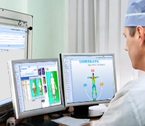

-
指导思想
1. 坚持中华传统医学文化和理论自信；
2. 坚持为大众健康服务的方向；
3. 坚持以钱学森“人体系统科学理论”为
指导，实现传统医学的创新与融合 . . .
更多 >> 3. 坚持以钱学森“人体系统科学理论”为指导，实现传统医学的创新与融合、继承与发展；
4. 坚持生命与自然的和谐统一；
5. 坚持中华传统医学科学的认识论和方法论；
6. 坚持不懈的努力，推动中华传统医学走向世界，为全人类服务。
-
发展宗旨
为社会基层服务，为大众健康服务，为国内外所有的医疗机构、健康管理机构、家庭和个人服务，是中医可视化技术应用与发展的根本宗旨。
-
发展目标
实现中医科技化、中医可视化、中医精准化、中医便利化、中医国际化、中医智能化。
-

经营理念
以国内外市场为目标，以大区域大行业、大系统、大链接、大连锁为主要方向，实现高技术、低价位、广覆盖、惠民服务。使中医可视化技术走进千家万户，成为人们日常生活的基本工具和生活内容。